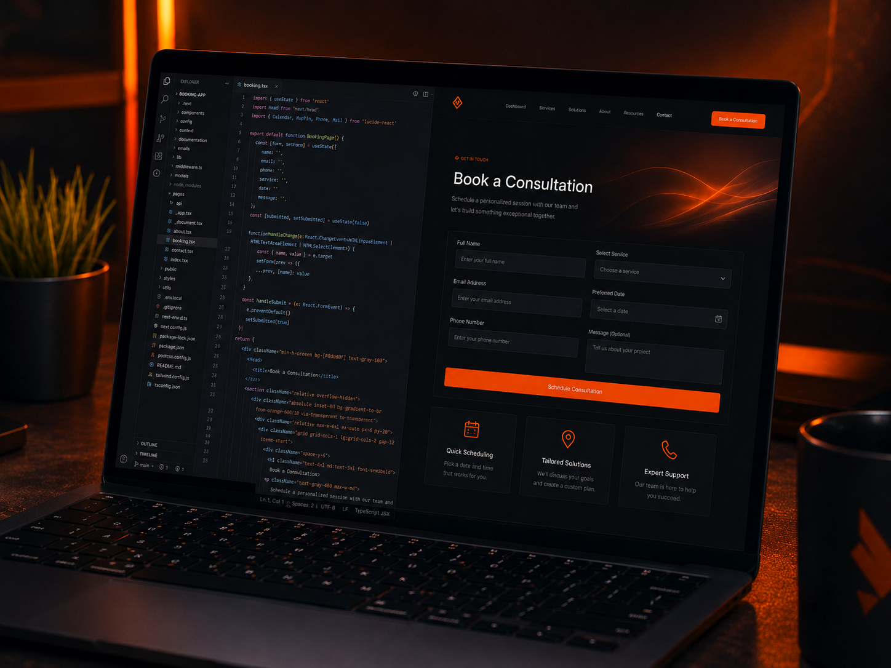

Best for content-led websites
Business websites, service pages, blogs, editable content and many WooCommerce stores can fit WordPress well.
See WordPress service →WordPress vs custom
WordPress and custom online solutions suit different business needs. The right choice depends on how often you want to update the site, what customers need to do and whether you need a normal business website or something more specialised.
Discuss your project →
Quick answer
For a business website with service pages, enquiries, editable content or a standard online store, WordPress can be a practical choice because the content can be managed through a familiar CMS and common functionality can be added without rebuilding everything from scratch. A custom solution becomes more useful when customers or staff need secure logins, dashboards, bookings, live information or a workflow specific to your business.
Business websites, service pages, blogs, editable content and many WooCommerce stores can fit WordPress well.
See WordPress service →Customer or staff portals, secure logins, dashboards and tailored workflows can make a custom solution the better fit.
See custom web apps →A platform does not automatically make a site look professional. Structure, content, responsive behaviour and implementation still matter.
See real work →Choose WordPress when
WordPress makes sense when pages, services, posts or other content will be updated regularly.
For many normal online stores, WooCommerce provides a strong starting point for products, categories and checkout.
Forms, SEO tools, galleries, bookings and other common website needs can often be handled through established WordPress tools.
A CMS can make it easier for the business to manage certain content without editing code directly.
Choose custom when
Projects with logged-in users, different account roles or private areas may need a more tailored solution.
If customers or staff need to view or update information in a dashboard, a custom solution can make more sense.
When the project must follow a process unique to the business, forcing it into plugins can create unnecessary complexity.
When your website needs to work closely with another service or business system, a purpose-built solution may be more suitable.
What about SEO?
Both WordPress and custom websites can have strong SEO foundations. What matters is whether the site is crawlable, mobile-friendly, logically structured, fast enough for users, clear about what each page is about, and supported by useful content and real authority. A poorly configured WordPress site can struggle, and a poorly structured custom site can struggle too.
How the right option is chosen
If WordPress gives the business what it needs without unnecessary complexity, I can build or improve the project there. If the requirements genuinely need accounts, databases, dashboards or custom behaviour, I can scope a custom build instead. The point is to match the technology to the work, not sell a more complicated solution just because it sounds more advanced.
FAQ
No. WordPress can support substantial business websites and online stores, but it is still important to keep the setup practical and maintainable.
No. A custom solution gives more flexibility, but that only matters when your business actually needs it.
Yes. A WordPress site can often be redesigned without changing the domain or starting every part from zero.
Yes. Send the features you need and get a clear recommendation on whether WordPress, a simpler website or a custom solution looks more appropriate.
Not sure which one?